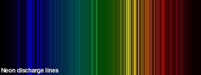

When a self-sustained gas discharge is illuminated by radiation which is resonant with an atomic or molecular transition of the elements within it, a change in its electrical properties occurs. This change is observed as an increase or decrease in the conductivity of the discharge and the effect is known as the optogalvanic effect. It is also possible to record a high-sensitivity spectrum of the discharge gas by illuminating the gas discharge using a lunable light source (for example, dye laser). The electronic excitation of the atoms in the discharge allow the observation of transitions starting from the metastable or excited state.

Optogalvanic diagnostics are applicable over an extremely wide range of discharge conditions, from high pressure discharges all the way through to very low current discharges in the Townsend regime, including positive and negative ion studies. Different processes dominate in the various regimes so optogalvanic detection is a very versatile tool and has provided many new insights, e.g. in the high pressure regime it gives information on superelastic processes, in the normal glow on electron collisional mixing, in the Townsend regime it has provided new data on the fundamental ionization mechanisms, in discharge sheath regions, where there are the special problems of high electric fields and beam electrons, optogalvanic techniques have allowed tremendous improvements in understanding, while with negative ions it has provided very impressive new data on photodetachment.